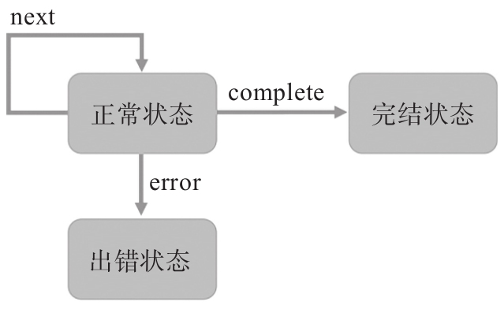

Observable和Observer的交流，除了用next传递数据，用complete表示“没有更多数据”，还需要一种表示“出错了”的方式。
理想情况下，Observable只管生产数据给Observer来消耗，但是，难免有时候Observable会遇到了异常情况，而且这种异常情况不是Observable自己能够处理并恢复正常的，Observable在这时候没法再正常工作了，就需要通知对应的Observer发生了这个异常情况，如果只是简单地调用complete，Observer只会知道“没有更多数据”，却不知道没有更多数据的原因是因为遭遇了异常，所以，我们还要在Observable和Observer的交流渠道中增加一个新的函数error。
修改代码来展示error的功能，代码如下：
import {Observable} from 'rxjs/Observable';
const onSubscribe = observer => {
observer.next(1);
observer.error('Someting Wrong');
observer.complete();
};
const source$ = new Observable(onSubscribe);
const theObserver = {
next: item => console.log(item),
error: err => console.log(err),
complete: () => console.log('No More Data'),
}
source$.subscribe(theObserver);
这段代码的执行结果如下：
1 Someting Wrong
在onSubscribe函数中，通过调用next函数给Observer推送了一个数据1，接着，error函数给Observer推送了一个错误信息，在这里错误信息是一个字符串Something Wrong，被theObserver的error处理函数输出。
值得注意的是，在调动observer.error函数之后，紧接着调用了observer.complete，却没有引发theObserver的complete函数调用，这是为什么呢？
在RxJS中，一个Observable对象只有一种终结状态，要么是完结（complete），要么是出错（error），一旦进入出错状态，这个Observable对象也就终结了，再不会调用对应Observer的next函数，也不会再调用Observer的complete函数；同样，如果一个Observable对象进入了完结状态，也不能再调用Observer的next和error。

图2-2 Observable对象的状态流转图
在前面已经介绍过，onSubscribe的参数observer并不是传给subscribe的参数theObserver，而是对theObserver的包装，所以，即使在observer.error被调用之后强行调用observer.complete，也不会真正调用到theObserver的complete函数。